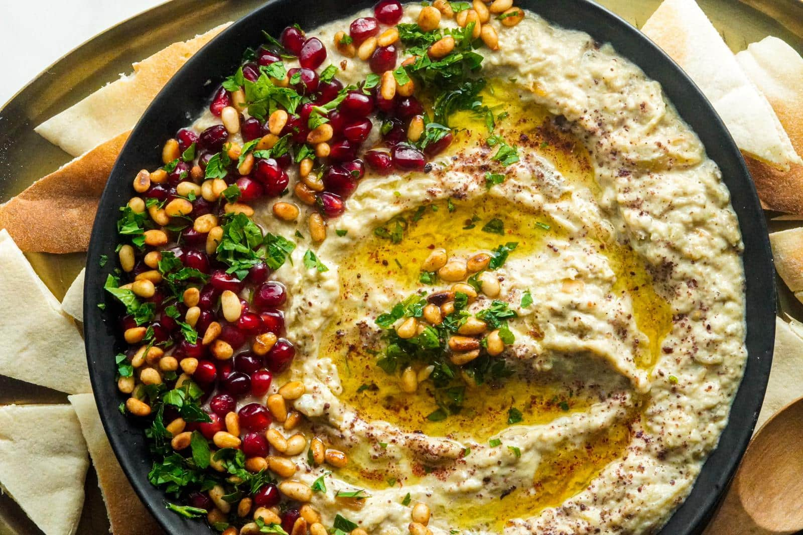

Baba Ganoush

Description
What is baba ganoush? It's sounds kind of funny doesn't it? Well that's cause it's not English you uncultured swine.
Some scientists believe that it is a rare kind of pickle, but we know better don't we? In fact I'm fairly certain it is
a dipping sauce. Do you have chips? Bread (preferably of that flat varierty)? What about some veggies? Well then, baba ganoush
might be something you are interested in. Go fourth! Find the baba ganoush! Or better yet, make it yourself with this recipe!
Ingredients
- 2 pounds Italian eggplants
- 2 medium cloves of garlic, pressed or minced
- 2 tablespoons lemon juice, more if necessary
- ¼ cup tahini
- ⅓ cup extra-virgin olive oil, plus more for brushing the eggplant and garnish
- 2 tablespoons chopped fresh flat-leaf parsley, plus extra for garnish
- ¾ teaspoon salt, to taste
- ¼ teaspoon ground cumin
- Pinch of smoked paprika, for garnish
- Serving suggestions: warmed or toasted pita wedges, carrot sticks, bell pepper strips, cucumber slices, etc.
Steps
- Preheat the oven to 450 degrees Fahrenheit with a rack in the upper third of the oven.
Line a large, rimmed baking sheet with parchment paper to prevent the eggplant from sticking to the pan.
Halve the eggplants lengthwise and brush the cut sides lightly with olive oil.
Place them in the prepared pan with the halved sides down.
- Roast the eggplant until the interior is very tender throughout and the skin is collapsing, about 35 to 40 minutes
(this might take longer if you are using 1 large eggplant).
Set the eggplant aside to cool for a few minutes. Flip the eggplants over and scoop out the flesh with a large spoon,
leaving the skin behind.
- Place a mesh strainer over a mixing bowl, then transfer the flesh to the strainer and discard the skins.
Pick out any stray bits of eggplant skin and discard. You want to remove as much moisture from the eggplant here as possible,
so let the eggplant rest for a few minutes and shake/stir the eggplant to release some more moisture.
- Discard all of the eggplant drippings, drain and wipe out the bowl, and dump the eggplant into the bowl.
Add the garlic and lemon juice to the eggplant and stir vigorously with a fork until eggplant breaks down.
Add the tahini to the bowl and stir until it’s incorporated. While stirring, slowly drizzle in the olive oil.
Continue stirring until the mixture is pale and creamy, and use your fork to break up any particularly long strings of eggplant.
- Stir in the parsley, salt and cumin. Season to taste with more salt (I usually add another ¼ teaspoon) and more lemon juice,
if you’d like a more tart flavor.
- Transfer the baba ganoush to a serving bowl and lightly drizzle olive oil on top.
Lastly, sprinkle parsley and smoked paprika on top. Serve with accompaniments of your choice.
It’s also great on sandwiches!